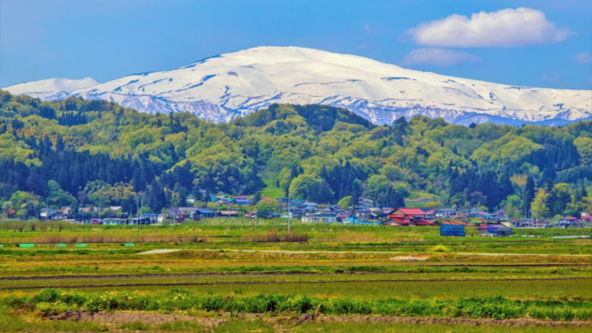
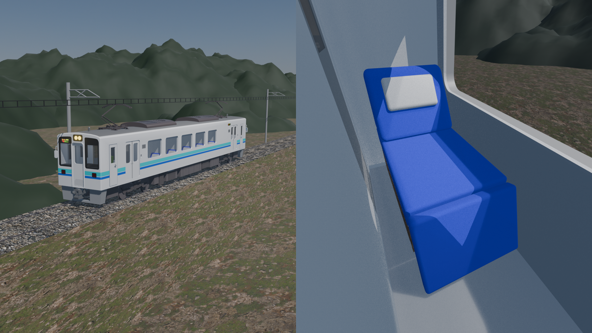
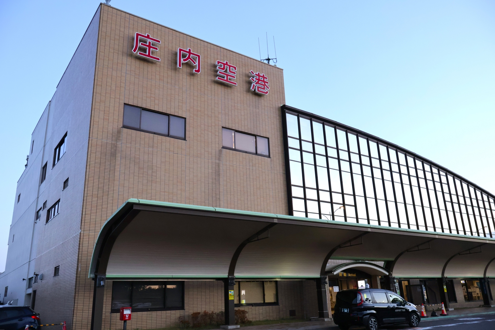

おすすめ・おでかけ情報

冬の月山登山ツアー開催中！
初心者から上級者まで楽しめる多彩なコースをご用意。
臨時特急「スーパーやまがた」運行中！
酒田、鶴岡、仙台の各都市から山形へ最速で結びます。

深夜快速で多方面へ快適な旅を！
北東北・信越・関東へは羽前急行の深夜快速が便利です。

庄内空港へは羽前急行バスが便利！
三川駅・酒田駅・鶴岡駅から直行バスを毎日運行しております。
重要なお知らせ
- 1997.04.10 大切なお知らせ 沿線・ホーム上で撮影・録音等をされる皆様へ
- 2008.03.14 リリース 羽前急行の全駅でICカードでのご乗車に対応しました
- 2021.09.03 お知らせ 列車内への危険物の持込は禁止されています
- 2014.12.20 リリース 羽前急行の全駅で点字ブロックの整備が完了しました
お知らせ
- 2026.02.21 お知らせ 酒田駅発の庄内空港直行バス一部運休のお知らせ
- 2026.02.01 お知らせ 特急「羽前」車内にて「月山天然水」の販売を開始します
- 2026.01.30 リリース UZ-1000形への「熱線吸収ブロンズガラス」追加換装完了のお知らせ
- 2025.12.20 リリース 高速走行試験車「キヤUZ-850形」の走行試験で最高時速192kmを達成
ニュースリリース
- 2026.02.19 リリース 2026年のダイヤ改正はありません
- 2026.02.01 お知らせ UZ-1000形車内にて「月山天然水」の限定販売を開始します
- 2026.01.30 リリース UZ-1000形への「熱線吸収ブロンズガラス」追加換装完了のお知らせ
- 2025.12.20 リリース 高速走行試験車「キヤUZ-850形」の走行試験で最高時速192kmを達成
ニュースリリース
- 2026.02.07 リリース 2026年3月14日 ダイヤ改正を実施します（秋田直通便の増発）
- 2026.02.01 お知らせ UZ-1000形車内にて「月山天然水」の限定販売を開始します
- 2026.01.30 リリース UZ-1000形への「熱線吸収ブロンズガラス」追加換装完了のお知らせ
- 2025.12.20 リリース 高速走行試験車「キヤUZ-850形」の走行試験で最高時速192kmを達成